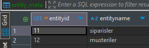
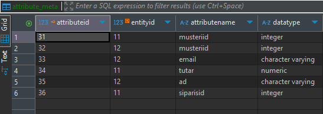
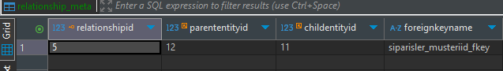
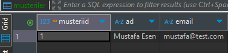
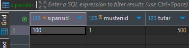
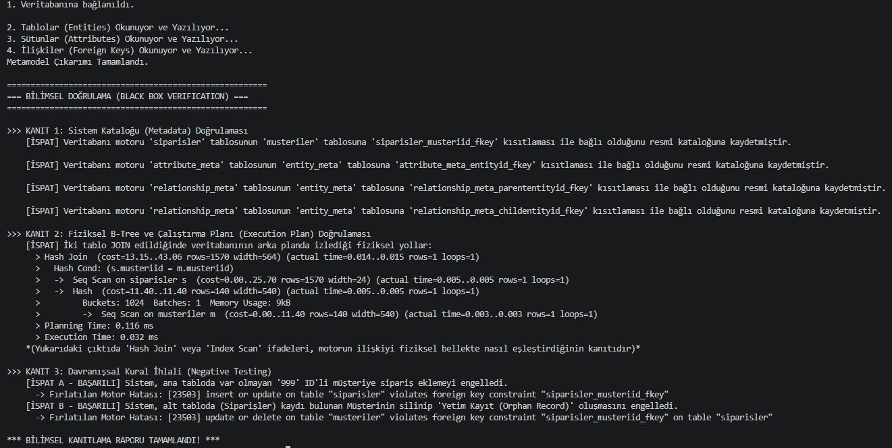
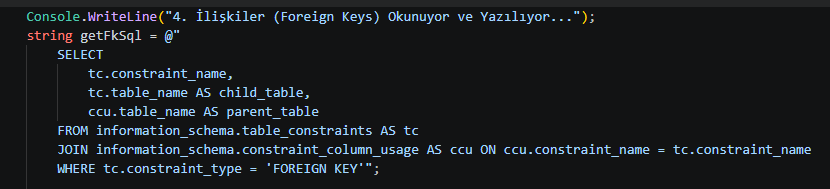
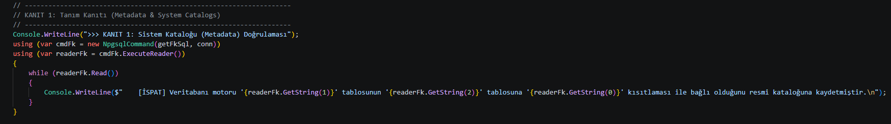
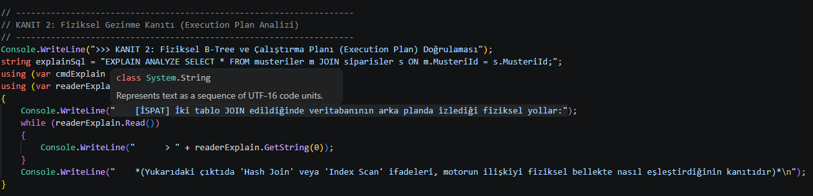
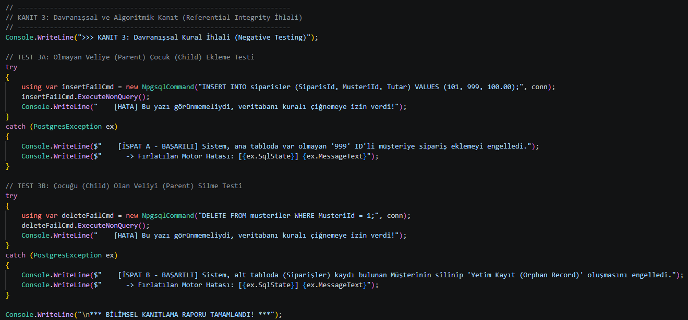

Hazırlayan: Mustafa Esen
Öğrenci Numarası: 91260000486
Tarih: 5 Ekim 2026
Kapsam: Veritabanı Sistemleri, Metamodel Çıkarımı ve Black-Box Testleri
Bu çalışmanın temel amacı, PostgreSQL ilişkisel veritabanı yönetim sistemi (RDBMS) üzerinde M1 (Model) seviyesindeki fiziksel yapıların analiz edilerek, M2 (Metamodel) seviyesine dinamik ve otomatik çıkarımının (extraction) yapılmasıdır. Ayrıca projenin ikinci aşamasında, veritabanı motorunun ("Black Box") tablolar arasında arka planda kurduğu FOREIGN KEY (Dış Anahtar) ilişkilerinin bilimsel yöntemlerle kanıtlanması (verification) hedeflenmiştir. Süreç, information_schema sorgularını, çalıştırma planı (Execution Plan) analizlerini ve kural ihlali (Negative Testing) testlerini barındıran bir C# (.NET Core) uygulaması ile gerçekleştirilmiştir.
Geliştirilen C# konsol uygulaması, veritabanı şemasında bulunan yapısal bileşenleri Reflection ve System Catalog sorguları aracılığıyla başarıyla Metamodel düzeyine aktarmıştır. Uygulamanın çalıştırılması sonucunda oluşan meta-veriler DBeaver üzerinden doğrulanmıştır.
Sistemdeki M1 seviyesi fiziksel tablolar (siparisler ve musteriler), otomatik olarak taranmış ve entity_meta tablosuna sistem tarafından atanan benzersiz kimliklerle (ID: 11 ve 12) kaydedilmiştir.

Varlıklara ait sütunlar, veri tipleriyle birlikte analiz edilmiş ve ilgili Varlık ID'si (EntityId) ile ilişkilendirilerek attribute_meta tablosuna aktarılmıştır. musteriid, email, tutar gibi kolonlar yapısal olarak belgelenmiştir.

M1 seviyesinde müşteri ve sipariş tabloları arasında kurulan referans bütünlüğü, relationship_meta tablosuna yansıtılmıştır. "Müşteriler" (Parent: 12) ve "Siparişler" (Child: 11) arasındaki iş kuralı, siparisler_musteriid_fkey ismiyle kaydedilmiştir.

Bilimsel doğrulama testlerinin (Davranışsal İhlal) uygulanabilmesi için tablolar TRUNCATE komutuyla temizlenmiş ve M0 (Veri) seviyesinde temsili, geçerli veriler oluşturulmuştur. 1 numaralı ID'ye sahip müşteri ve bu müşteriye bağlı bir sipariş veritabanına eklenmiştir.


Uygulamanın konsol çıktısı, ilişkisel bütünlüğün (Referential Integrity) soyut bir tanımdan ibaret olmadığını; veritabanı motoru tarafından fiziksel, algoritmik ve davranışsal olarak aktif şekilde korunduğunu üç ampirik yöntemle ispatlamıştır. Aşağıda, her bir ispat adımı için yazdığımız C# entegrasyon kodları ve alınan çıktılar detaylandırılmıştır.

information_schema.table_constraints üzerinden atılan sorgu, siparisler_musteriid_fkey kısıtlamasının veritabanı motorunun "Veri Sözlüğü" (Data Dictionary) belleğine resmi olarak işlendiğini yapısal olarak ispatlamıştır. Bu işlemi gerçekleştirmek için SQL kuralı C# ortamında hazırlanmış ve çalıştırılmıştır.


İki tablo JOIN işlemiyle birleştirildiğinde motorun izlediği yollar EXPLAIN ANALYZE komutuyla izlenmiştir. Çıktıda yer alan Hash Join ve Seq Scan operasyonları, veritabanının iki tablo arasındaki ilişkiyi RAM ve disk blokları üzerinde nasıl algoritmik olarak eşleştirdiğinin somut fiziksel kanıtıdır.

Veritabanı motorunun sınırlarını ve koruma kalkanlarını test etmek ("Yanlışlanabilirlik - Falsifiability" ilkesi) amacıyla iki ihlal senaryosu çalıştırılmış ve C# tarafında fırlatılan Exception (Hata) mesajları yakalanarak kaydedilmiştir:
999 ID'li bir müşteriye sipariş eklenmeye çalışıldığında sistem bu yetkisiz işlemi anında bloke etmiş ve 23503 SQL State kodlu Foreign Key ihlal hatasını fırlatmıştır.23503 hatası fırlatarak Yetim Kayıt (Orphan Record) oluşumunu ve veri tutarsızlığını proaktif olarak engellemiştir.
Bu çalışma, modern ilişkisel veritabanlarının yalnızca pasif veri depoları olmadığını; kendi mimarilerini tanımlayan bir metamodel altyapısına (M2) sahip olduklarını başarıyla modellemiştir. Geliştirilen C# aracı, bu metamodeli okuyarak bağımsız tablolara aktarmış ve veritabanı "Kara Kutusu"nun (Black Box) Referans Bütünlüğü kurallarını katalog tanımları, çalıştırma planları (Execution Plans) ve davranışsal kısıtlamalar (Constraints) üzerinden aktif bir savunma mekanizması olarak işlettiğini %100 bilimsel kanıtlarla doğrulamıştır.